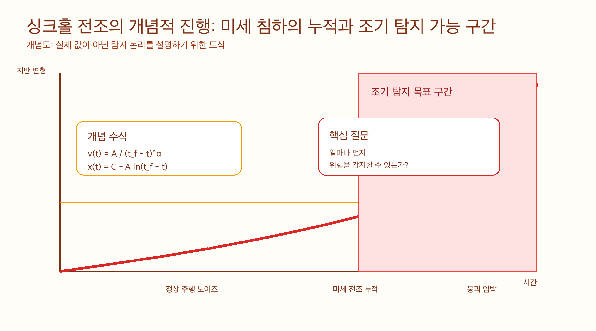
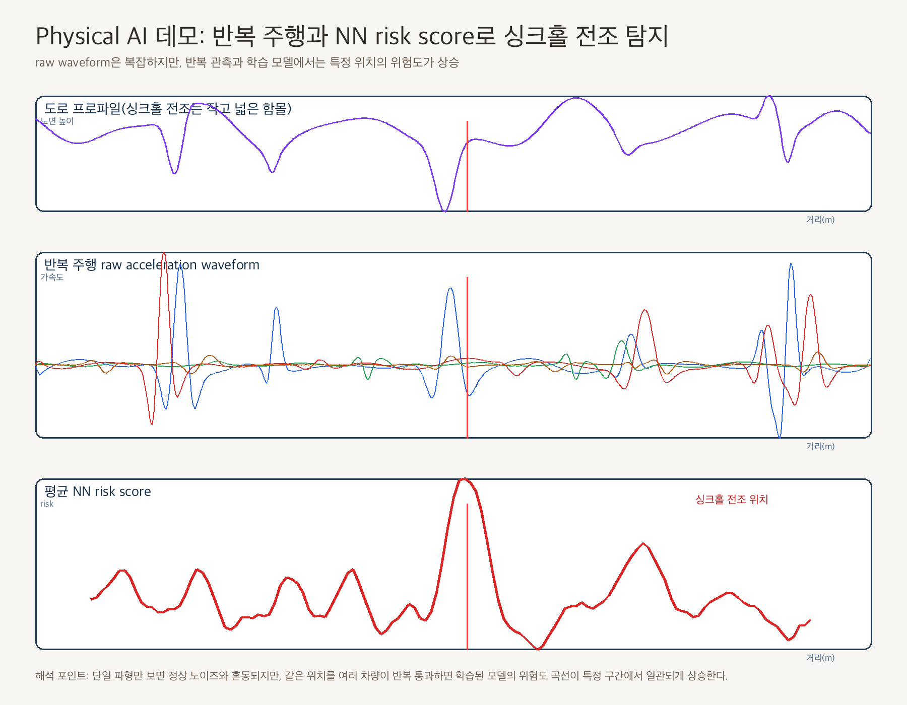
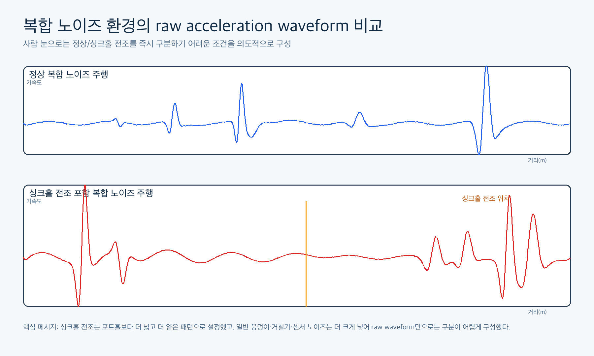
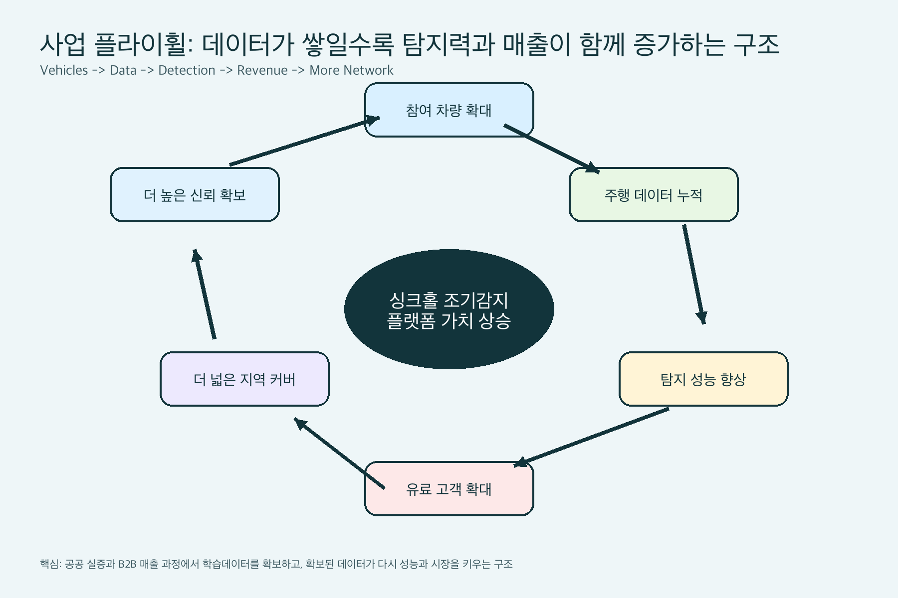

Q1. 이 아이디어를 떠올린 배경은 무엇인가요?
싱크홀의 문제는 ‘보이지 않는 것’이 아니라 ‘상시 관측되지 않는 것’에 가깝습니다. 정밀 점검 장비는 존재하지만 도심 전체 도로망을 매일, 저비용으로, 연속적으로 살피기는 어렵습니다. 그 사이 지하 공동화와 침하는 누적되고, 시민은 붕괴 이후에야 위험을 체감합니다. NumTerra는 이미 도로 위를 달리고 있는 차량을 도시의 이동형 감지망으로 바꾸자는 문제의식에서 출발했습니다. 차량 안의 스마트폰과 단말에는 가속도, 자이로, 위치, 시간 데이터가 있고, 반복 주행이 쌓이면 도로의 평상시 반응과 이상 반응을 비교할 수 있습니다. 핵심은 큰 충격 하나를 찾는 것이 아니라, 정상 주행과 과속방지턱, 맨홀, 노면 요철 같은 방해 신호 속에서 싱크홀 전조처럼 늦게 드러나는 미세 패턴을 먼저 읽는 것입니다. NumTerra는 신호처리와 Physical AI를 결합해 일상 주행 데이터를 재난 조기감지 데이터로 전환하고자 합니다.
Q2. 누구의 어떤 문제를 해결하고자 하나요?
NumTerra가 해결하려는 문제는 도로 안전 관리의 관측 공백입니다. 지자체, 도로관리기관, 공공 인프라 운영기관은 넓은 도로망을 관리해야 하지만 모든 구간을 자주 정밀 점검하기 어렵고, 위험 구간의 우선순위를 정하는 데도 한계가 있습니다. 물류사와 모빌리티 사업자는 반복 운행 중 도로 위험에 노출되지만, 그 데이터를 안전 의사결정 자산으로 활용하지 못하고 있습니다. NumTerra는 일반 차량과 협력 차량의 주행 데이터를 활용해 위험 후보 구간을 빠르게 좁혀주는 조기 탐지 레이어를 제공합니다. 정밀 탐사를 대체하는 서비스가 아니라, 어디를 먼저 점검해야 하는지 알려주는 데이터 기반 선별 체계입니다. 이를 통해 공공기관은 점검 예산과 인력을 더 효율적으로 배치할 수 있고, 민간 차량 운영사는 운행 안전과 리스크 관리를 강화할 수 있습니다. 장기적으로는 시민에게 위험 알림과 지역 안전 정보를 제공하는 도시 안전 데이터 플랫폼으로 확장할 수 있습니다.
Q3. 이 아이디어를 어떻게 실현하고 싶으신가요?
NumTerra의 실현 전략은 차량 데이터 수집, 신호 정규화, Physical AI 학습, crowd 누적 분석, 위험 리포트와 대시보드 제공의 단계로 구성됩니다. 첫째, 참여형 또는 협력차량 기반 주행데이터 수집 앱을 개발합니다. 스마트폰 또는 차량 단말에서 가속도, 자이로, 위치, 시간, 속도 관련 데이터를 안정적으로 수집하고 동일 구간 반복 주행 데이터를 축적합니다. 둘째, 수집된 주행 신호를 Fourier/Laplace 변환, 필터링, 주파수 특징 추출, 이벤트 제거 로직을 통해 정규화합니다. 차량 종류, 속도, 하중, 타이어 상태, 주행 습관, 맨홀, 과속방지턱, 작은 요철은 모두 강한 노이즈가 될 수 있으므로 신호를 해석 가능한 특징공간으로 바꾸고 차량 간 편차를 줄이는 과정이 중요합니다. 셋째, 실제 싱크홀 전조 데이터가 희소하다는 한계를 Physical AI로 보완합니다. 다양한 도로 구조, 지반 손상 조건, 차량 하중, 속도, 노면 상태를 시뮬레이션하여 학습 데이터를 생성하고, 실주행 데이터와 결합해 모델을 보정합니다. 넷째, 단일 차량 판단이 아니라 같은 위치를 여러 차량이 반복 통과할 때 나타나는 공통적인 이탈 신호를 시간축과 위치축으로 누적하고 위험 점수로 변환합니다. 초기 고객은 지자체, 도로관리기관, 공공 인프라 기관, 물류사, 모빌리티 사업자로 설정합니다. 1단계는 실증 프로젝트와 데이터 분석 용역, 2단계는 정기 모니터링 리포트와 대시보드 구독, 3단계는 보험사·내비게이션·물류 플랫폼 대상 API 및 데이터 라이선스, 4단계는 일반 운전자 대상 위험 알림과 안전 리포트로 확장합니다.
Q4. 제출 이미지 구성은 어떻게 되나요?
이미지는 도로 아래 위험이 누적되는 문제 정의에서 시작해, 차량이 이동형 센서망이 되는 구조, raw waveform을 위험 점수로 바꾸는 신호처리 파이프라인, Physical AI로 희소한 싱크홀 전조 데이터를 보완하는 개념증명, 데이터가 쌓일수록 탐지 성능과 참여 네트워크가 커지는 사업 플라이휠 순서로 구성합니다.




